전자기사 (2017-05-07 기출문제)
1과목: 전기자기학
1. 그림과 같은 히스테리시스 루프를 가진 철심이 강한 평등자계에 의해 매초 60Hz로 자화할 경우 히스테리스 손실은 몇 W 인가? (단, 철심의 체적은 20cm3, Br=5Wb/m2, Hc=2AT/m이다.)
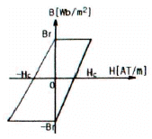
- 1.2×10-2
- 2.4×10-2
- 3.6×10-2
- 4.8×10-2
(정답률: 41%)

2. 유전율 ε=8.855×10<sup>-12</sup>-(F/m)인 진공 중을 전자파가 전파할 때 진공 중의 투자율(H/m)은?
- 7.58×10-5
- 7.58×10-7
- 12.56×10-5
- 12.56×10-7
(정답률: 67%)
3. 그림과 같은 길이가 1m인 동축 원통 사이의 정전용량(F/m)은?
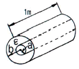
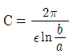
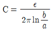
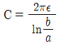
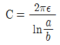
(정답률: 76%)
4. 철심이 든 환상 솔레노이드의 권수는 500회, 평균 반지름은 10cm, 철심의 단면적은 10cm2, 비투자율은 4000이다. 이 환상 솔레노이드에 2A의 전류를 흘릴 때 철심 내의 자속(Wb)은?
- 4×10-3
- 4×10-4
- 8×10-3
- 8×10-4
(정답률: 66%)
5. 원통좌표계에서 전류밀도j=Kr2az(A/m2)일 때 암페어의 법칙을 사용한 자계의 세기 H(AT/m)는? (단, K는 상수이다.)
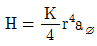
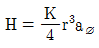
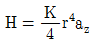
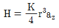
(정답률: 35%)
6. 정전용량이 Co(F)인 평행판 공기콘덴서가 있다. 이것의 극판에 평행으로 판간격 d(m)의 1/2 두께인 유리판을 삽입하였을 때의 정전용량(F)은? (단, 유리판의 유전율은 ε(F/m)이라 한다.)
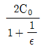
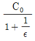
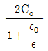
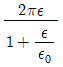
(정답률: 46%)
7. 점전하에 의한 전계의 세기(V/m)를 나타내는 식은? (단, r은 거리, Q는 전하량, λ는 선전하 밀도, σ는 표면전하밀도이다.)
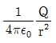
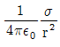
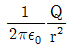
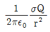
(정답률: 74%)
8. 어떤 공간의 비유전율은 2이고, 전위
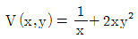
이라고 할 때 점 (1/2, 2)에서의 전하밀도 ρ는 약 몇 pC/m3 인가?- -20
- -40
- -160
- -320
(정답률: 35%)
9. 유전율 ε, 투자율 μ인 매질에서의 전파속도 v는?
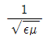
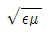
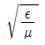
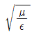
(정답률: 69%)
10. 벡터 포텐샬 A=3x2yaz+2xay-z3az(Wb/m)일 때의 자계의 세기 H(A/m)는? (단, μ는 투자율이라 한다.)
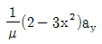
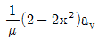
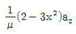
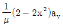
(정답률: 48%)
11. 전계 E(V/m), 전속밀도 DC/m2), 유전율 Є=Є0Єs(F/m), 분극의 세기 P(C/m2) 사이의 관계는?
- P=D+Є0E
- P=D-Є0E
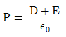
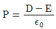
(정답률: 80%)
12. 내부도체 반지름이 10mm, 외부도체의 내반지름이 20mm인 동축케이블에서 내부도체 표면에 전류 I가 흐르고, 얇은 외부도체에 반대방향인 전류가 흐를 때 단위 길이당 외부 인덕턴스는 약 몇 H/m 인가?
- 0.28×10-7
- 1.39×10-7
- 2.03×10-7
- 2.78×10-7
(정답률: 55%)
13. 그림과 같이 무한평면 도체 앞 a(m) 거리에 점전하 Q(C)가 있다. 점 0에서 x(m)인 P점의 전하밀도 σ(C/m2)는?
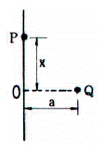
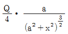
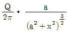
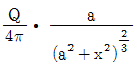
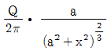
(정답률: 64%)
14. 그림과 같이 직각 코일이
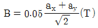
인 자계에 위치하고 있다. 코일에 5A 전류가 흐를 때 z축에서의 토크는 약 몇 N･m 인가?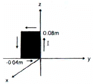
- 2.66 × 10-4ax
- 5.66 × 10-4ax
- 2.66 × 10-4az
- 5.66 × 10-4az
(정답률: 64%)
15. 무한 평면에 일정한 전류가 표면에 한 방향으로 흐르고 있다. 평면으로부터 r만큼 떨어진 점과 2r만큼 떨어진 점과의 자계의 비는 얼마인가?
- 1
- √2
- 2
- 4
(정답률: 16%)
16. 막대자석 위쪽에 동축도체 원판을 놓고 회로의 한 끝은 원판의 주변에 접촉시켜 회전하도록 해놓은 그림과 같은 패러데이 원판 실험을 할 때 검류계에 전류가 흐르지 않는 경우는?
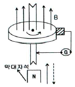
- 자석만을 일정한 방향으로 회전시킬 때
- 원판만을 일정한 방향으로 회전시킬 때
- 자석을 축 방향으로 전진시킨 후 후퇴시킬 때
- 원판과 자석을 동시에 같은 방향, 같은 속도로 회전시킬 때
(정답률: 68%)
17. 최대 정전용량 C0(F)인 그림과 같은 콘덴서의 정전용량이 각도에 비례하여 변화한다고 한다. 이 콘덴서를 전압 V(V)로 충전했을 때 회전자에 작용하는 토크는?
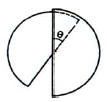
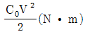
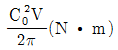
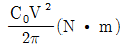
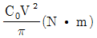
(정답률: 31%)
18. 자기회로에서 자기저항의 관계로 옳은 것은?
- 자기회로의 길이에 비례
- 자기회로의 단면적에 비례
- 자성체의 비투자율에 비례
- 자성체의 비투자율의 제곱에 비례
(정답률: 75%)
19. 그림과 같은 정방형관 단면의 격자점 ⑥의 전위를 반복법으로 구하면 약 몇 V 인가?
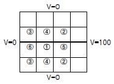
- 6.3
- 9.4
- 18.8
- 53.2
(정답률: 67%)
20. 서로 결합하고 있는 두 코일의 C1과 C2의 자기인덕턴스가 각각 Lc1, Lc2라고 한다. 이 둘을 직렬로 연결하여 합성인덕턴스 값을 얻은 후 두 코일간 상호인덕턴스의 크기(|M|)를 얻고자 한다. 직렬로 연결할 때, 두 코일간 자속이 서로 가해져서 보강되는 방향의 합성인덕턴스의 값이 L1, 서로 상쇄되는 방향의 합성인덕턴스 값이 L2일 때, 다음 중 알맞은 식은?
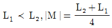
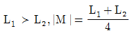
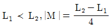
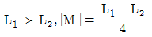
(정답률: 64%)
2과목: 회로이론
21. △결선된 부하를 Y결선으로 바꾸면 소비전력은 어떻게 되는가? (단, 선간 전압은 일정하다.)
- 9배로 증가한다.
- 0.1배로 줄어든다.
- 3배로 증가한다.
- 0.3배로 줄어든다.
(정답률: 48%)
22. 그림과 같은 회로에서 영상 임피던스 Z01, Z02의 값은 약 몇 Ω 인가?
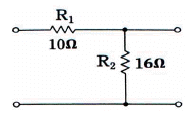
- Z01 = 8, Z02 = 4.96
- Z01 = 8, Z02 = 9.92
- Z01 = 16, Z02 = 4.96
- Z01 = 16, Z02 = 9.92
(정답률: 48%)
23. 다음 그림과 같은 파형의 라플라스(Laplace) 변환은?
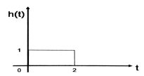
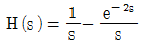
(정답률: 58%)
24. 신호 f(t)에 여현파 신호 cosω0t를 곱한 값인 f(t)cosω0t을 Fourier 변환하면?
(정답률: 43%)
25. 자계 코일에 권수(N)는 1000회, 저항(R)은 6Ω에서 전류(I)가 10A로 통과하였을 경우 자속 ø=6×10-2 Wb이다. 이 회로의 시정수는 몇 초(sec) 인가?
- 1
- 2
- 10
- 12
(정답률: 54%)
26. 그림과 같은 회로의 4단자 정수는?
(정답률: 60%)
27. R=80Ω, XL=60Ω인 R-L 병렬회로에 v=220∠45°V의 전압을 가했을 때 코일 L에 흐르는 전류는 몇 A 인가?
- 3.67∠45°
- 5.75∠90°
- 3.67∠-45°
- 5.75∠-90°
(정답률: 57%)
28. 다음 운동 방정식으로 표시되는 계의 계수 행렬 A는 어떻게 표시되는가?
(정답률: 46%)
29. 이상 변압기의 1차측 권선수:2차측 권선수가 1:2 일 때 부하 저항은 50Ω이다. 입력에서 본 등가 임피던스는 몇 Ω 인가?
- 50
- 25
- 12.5
- 6.25
(정답률: 54%)
30. 그림과 같은 이상 변압기에서 Ri=300Ω, RL=75Ω일 때, 권선비 n1:n2는 얼마인가?
- 1:2
- 1:4
- 2:1
- 4:1
(정답률: 45%)
31. R-L-C 병렬회로가 공진 주파수보다 작은 주파수 영역에서 동작할 때, 이 회로는 어떤 회로로 동작하는가?
- 유도성 회로
- 용량성 회로
- 저항성 회로
- 탱크 회로
(정답률: 53%)
32. 직류 전압원에 저항을 접속하고 전류를 흐를 때 이 전류 값을 30% 증가시키기 위해서는 저항값은 어떻게 하여야 하는가?
- 2배로 증가시킨다.
- 1.2배로 증가시킨다.
- 저항값을 그대로 유지시킨다.
- 0.77배로 감소시킨다.
(정답률: 60%)
33. 그림과 같은 회로에서 정상 전류(i)는 얼마인가? (단, Vdc = 20, R = 20Ω, L = 0.2H 이다.)
- i=2A
- i=4A
- i=1A
- i=6A
(정답률: 46%)
34. RLC 직렬 공진회로에서 선택도 Q를 표시하는 식은? (단, ωr공진 각 주파수이다.)
- ωrC/R
- ωrL/R
- ωr/R
- ωrR/L
(정답률: 49%)
35. 다음 함수에 관한 설명 중 틀린 것은? (단, T는 주기이다.)
- f(t)=f(-t)의 관계가 모든 t에 대해서 성립하면 f(t)는 우함수이다.
- f(t)=-f(-t)의 관계가 모든 에 대해서 성립하면 f(t)는 기함수이다.
- f(t)=-f(t+T/2)의 관계가 모든 에 대해서 성립하면 f(t)는 반파대칭인 주기파이다.
- f(t)=f(t±T/2)의 관계가 모든 에 대해서 성립하면 f(t)는 우함수이다.
(정답률: 55%)
36. 저항(R) 8Ω과 정전용량(C) 500μF을 직렬로 연결하고 교류전압 v=200√2sin120πt[V]을 인가하였다. 이때 이 회로의 전압과 전류의 위상차는 약 몇 도(°) 인가?
- 27°
- 34°
- 56°
- 60°
(정답률: 31%)
37. 그림과 같은 회로가 정저항 회로가 되기 위한 C값은 몇 μF 인가? (단, R=1Ω, L=200mH 이다.)(오류 신고가 접수된 문제입니다. 반드시 정답과 해설을 확인하시기 바랍니다.)
- 0.1
- 0.2
- 1
- 2
(정답률: 48%)
38. 다음 회로망은 T형 회로 및 π형 회로의 종속접속으로 이루어졌다. 이 회로망의 ABCD 파라미터 중 틀린 것은?
- A = 7
- B = 48
- C = 6
- D = 7
(정답률: 64%)
39. 원점을 지나지 않는 무한 직선의 궤적을 그리는 벡터의 역궤적은 어떻게 되는가?
- 원점을 지나는 직선이 된다.
- 원점을 지나는 원이 된다.
- 원점을 지나지 않는 직선이 된다.
- 원점을 지나지 않는 원이 된다.
(정답률: 58%)
40. 그림에서 a-b간에 25V의 전압을 가할 때 5A의 전류가 흐른다. r1 및 r2에 흐르는 전류비를 1:3으로 하려면 r1 및 r2의 저항은 몇 Ω 인가?
- r1=12, r2=4
- r1=24, r2=8
- r1=6, r2=2
- r1=2, r2=6
(정답률: 50%)
3과목: 전자회로
41. 무귀환 시 전압이득이 30 이고, 고역 차단 주파수가 20kHz인 증폭기에 귀환을 걸어 전압이득이 20으로 되었다면 이때의 차단주파수는 몇 kHz 인가?
- 10
- 20
- 30
- 40
(정답률: 41%)
42. 이상적인 연산 증폭기에 대한 설명 중 틀린것은?
- 출력의 일부를 반전 입력으로 되돌려서 출력 전압을 감소시키는 것을 부귀환이라 한다.
- 출력의 일부를 비반전 입력으로 되돌려서 출력 전압을 증가시키는 것을 정귀환이라 한다.
- 개별소자 증폭기로는 이루기 힘든 이상적인 증폭기에 가까운 조건을 갖추도록 다수의 개별소자들의 직접화로 이루어진 증폭기이다.
- 매우 낮은 입력 임피던스와 매우 높은 출력 임피던스를 가지도록 설계가 되었다.
(정답률: 57%)
43. 그림과 같은 NOR 게이트로 구성된 기본적인 플립플롭회로에서 S=0, R=1인 상태일 때 Q, 의 상태는? (단, 클록펄스(CP)가 1일 경우로 가정한다.)
(정답률: 52%)
44. 고주파 증폭회로의 트랜지스터에 관한 설명으로 틀린 것은?
- 트랜지스터의 베이스 폭이 얇을수록 고주파 증폭에 적합하다.
- 컬렉터 용량의 영향으로 입력 임피던스는 감소한다.
- 컬렉터 용량의 영향으로 출력이 귀환된다.
- 컬렉터 용량이 클수록 고주파 특성이 좋다.
(정답률: 26%)
45. 입력 주파수 192Hz를 T형 플립플롭 3개에 종속 접속하면 출력 주파수는 몇 Hz 인가?
- 586
- 64
- 48
- 24
(정답률: 47%)
46. 전력 증폭기 회로의 직류공급 전압이 12 V, 전류가 400 mA이고, 능률이 60%일 때 부하에서 출력전력은 몇 W 인가?
- 0.8
- 1.44
- 2.88
- 4.9
(정답률: 53%)
47. 그림의 비안정 멀티바이브레이터에서 R1 = R2 = R, C1 = C2 = C라고 하면 발진주파수는 대략 어떻게 표시되는가?
- 0.7/RC
- 0.5/RC
- 0.7/RLC
- 0.5/RLC
(정답률: 40%)
48. mod-8 존슨 카운터를 설계하기 위하여 최소 필요한 플립플롭의 수는?
- 2개
- 4개
- 8개
- 16개
(정답률: 39%)
49. 부호기라고도 하며 복수 개의 입력을 2진 코드로 변환하는 조합 논리회로를 무엇이라 하는가?
- 인코더
- 디코더
- 플립플롭
- 멀티플렉서
(정답률: 37%)
50. JFET에서 IDSS = 12mA, VP = -4V 이고, VGS = -2V일 때 드레인 전류 ID는 몇 mA 인가?
- 1.5
- 2.7
- 3
- 5
(정답률: 45%)
51. 트랜지스터의 컬렉터 누설전류가 주위 온도 변화로 1.2 μA에서 239.2 μA로 증가되었을 때, 컬렉터의 전류가 1mA라면 안정도 계수 S는? (단, 소수점 둘째자리에서 반올림한다.)
- 1.2
- 2.2
- 4.2
- 6.3
(정답률: 54%)
52. FM 통신방식과 AM 통신방식을 비교했을 때, FM 통신방식에서 잡음 개선에 대한 설명으로 가장 옳은 것은?
- 변조지수와 잡음 개선과는 관계없다.
- 변조지수가 클수록 잡음 개선율이 커진다.
- 변조지수가 클수록 잡음 개선율이 적어진다.
- 신호파의 크기가 작을수록 잡음 개선율이 커진다.
(정답률: 49%)
53. 귀환이 없는 경우의 전압이득이 40dB 인 증폭기에 귀환율(β)이 0.09의 부귀환을 걸면 증폭기의 전압이득은 몇 dB 인가?
- 10
- 20
- 30
- 40
(정답률: 36%)
54. 다음 진리표를 만족하는 논리회로는?
(정답률: 49%)
55. 발진 회로의 발진의 조건으로 옳은 것은?
- 귀환 루프의 위상 천이가 0° 이다.
- 귀환 루프의 위상 천이가 180° 이다.
- 귀환 루프의 이득이 0 이다.
- 귀환 루프의 이득이 1/2이다.
(정답률: 41%)
56. 전압이득이 60dB, 왜율이 10%인 저주파 증폭기의 왜율을 0.1%로 개선하기 위해서는 귀환율(β)을 얼마로 하여야 하는가?
- 0.9
- 0.1
- 0.099
- 0.011
(정답률: 56%)
57. 변압기가 결합한 A급 증폭기에서 1차:2차(12:1) 변압기가 16Ω 부하저항에 연결되어 있을 때 1차 측에서 보는 실효저항(R1)은 약 몇 kΩ 인가?
- 1.8
- 2.1
- 2.3
- 2.5
(정답률: 43%)
58. 연산 증폭기의 종류에 대한 설명 중 틀린 것은?
- 반전 증폭기는 비반전 입력단은 접지로 하고 반전 입력단에 신호원을 입력시킨다.
- 단위 이득 증폭기는 비반전 입력단은 출력과 단락시키고 반전 입력단에 신호원을 입력시킨다.
- 비반전 증폭기는 반전 입력단은 저항을 이용하여 접지로 하고 비반전 입력단에 신호원을 입력시킨다.
- 적분기는 반전 증폭회로에서 귀환 소자인 저항 대신에 커패시터를 사용한 것이다.
(정답률: 40%)
59. 다음 그림은 π모델을 이용해서 공통 이미터 트랜지스터의 단락 전류이득을 구하기 위한 등가 회로이다. 단락 전류이득을 주파수 함수로 표시한 것으로 옳은 것은?
(정답률: 44%)
60. 다음 555 회로에서 출력주파수는 몇 kHz 인가?
- 5.64
- 6.64
- 4.64
- 7.64
(정답률: 49%)
4과목: 물리전자공학
61. 전자 방출에 관한 설명으로 틀린 것은?
- 금속을 고온으로 가열하면 자유전자의 일부가 금속 외부로 방출되는 현상을 열전자 방출이라 한다.
- 금속의 표면에 빛을 입사시키면 전자가 방출되는 현상을 광전자 방출이라 한다.
- 금속의 표면에 강한 전계를 가하면 전자가 방출되는 현상을 2차 전자 방출이라 한다.
- 금속의 표면에 전계를 가하면 금속 표면의 열전자 방출량보다 전자 방출이 증가하는 현상을 chottky 효과라 한다.
(정답률: 46%)
62. 공간전하영역이 반도체 내에만 존재하고, 금속 내에서 존재하지 않는 이유는?
- 반도체내의 전하밀도가 매우 크기 때문
- 공간전하를 유지하는 힘이 반도체가 금속에 비해서 매우 크기 때문
- 금속내의 전하밀도가 매우 작기 때문
- 공간전하를 유지하는 힘이 금속이 반도체에 비해서 매우 크기 때문
(정답률: 50%)
63. 실리콘 제어 정류소자(SCR)에 관한 설명으로 틀린 것은?
- 동작원리는 PNPN 다이오드와 같다.
- 일반적으로 사이리스터(thyristor)라고도 한다.
- SCR의 항복전압(breakover voltage)은 게이트가 차단 상태로 들어가는 전압으로 역방향 다이오드처럼 도통된다.
- 무접점 ON/OFF 스위치로 동작하는 반도체 소자이다.
(정답률: 23%)
64. 바리스터의 동작원리에 관한 설명 중 옳은 것은?
- 걸린 전압이 높을수록 저항이 커져서 전류의 크기를 제한할 수 있다.
- 걸린 전압이 높아지면 절연파괴가 일어나 단락(short)이 된다.
- 걸린 전압에 따라 정전용량이 달라져서 충격전류를 흡수한다.
- 걸린 전압이 높을수록 저항이 작아져서 과잉전류를 흡수한다.
(정답률: 35%)
65. 전계의 세기 E = 106[V/m]의 평등 전계 중에 놓인 전자의 가속도는? (단, 전자의 질량은 9.11×10-31[kg] 이고, 전하량은 1.602×10-19[C] 이다.)
- 1.75×1017[m/s2]
- 1.95×1016[m/s2]
- 2.⑤×1016[m/s2]
- 2.35×1014[m/s2]
(정답률: 48%)
66. pn 접합부의 특성으로 틀린 것은?
- 접합부에는 전압이 생긴다.
- 접합 저항은 외부전압에 따라 변한다.
- 접합 저항은 전류에 반비례한다.
- 접합 전압은 온도와 무관하다.
(정답률: 59%)
67. 트랜지스터에서 컬렉터의 역방향 바이어스를 계속 증대시키면 컬렉터 접합의 공핍층이 이미터 접합의 공핍층과 닿게 되어 베이스 중성영역이 없어지는 현상은?
- Early
- Tunnel
- Drift
- Punch-Through
(정답률: 55%)
68. 300 K에서 P형 반도체의 억셉터 준위가 32%가 채워져 있을 때 페르미 준위와 억셉터 준위의 차이는 몇 eV 인가?
- 0.02
- 0.08
- 0.2
- 0.8
(정답률: 41%)
69. 물질에서 직접적으로 전자가 방출될 수 있는 조건이 아닌 것은?
- 열을 가한다.
- 빛을 가한다.
- 전계를 가한다.
- 압축을 한다.
(정답률: 59%)
70. 진성 반도체에서 온도가 상승하면 페르미 준위는?
- 도너 준위에 접근한다.
- 금지대 중앙에 위치한다.
- 전도대 쪽으로 접근한다.
- 가전자대 쪽으로 접근한다.
(정답률: 58%)
71. 반도체에 관한 설명 중 잘못된 것은?
- 결정구조의 결함은 이동도를 감소시킨다.
- 직접 재결합률은 정공밀도와 전자밀도의 곱에 비례한다.
- 캐리어의 확산 길이는 이동도와 수명시간에 따라 변한다.
- p형 반도체의 억셉터(acceptor) 원자는 상온에서 정(+)으로 이온화된다.
(정답률: 50%)
72. 실리콘(Si) PN 접합다이오드에서의 컷인 전압(cut-in voltage)은 약 얼마인가?
- 0 V
- 0.7 V
- 7 V
- 70 V
(정답률: 63%)
73. 3[cm] 떨어진 두 평면 전극으로 구성된 2극관에 3kV의 전압을 걸었을 때, 강전계로 인해 음극의 일함수가 낮아질 경우, 감소된 일함수의 양은? (단, 전자의 전하량 e=1.6×10-19[C], 진공에서의 유전율 ε0=8.85×10-12[F/m]이다.)
- 0.12eV
- 0.012eV
- 0.24eV
- 0.024eV
(정답률: 22%)
74. 금속의 일함수에 관한 설명으로 옳은 것은?
- 표면 전위장벽 EB와 Fermi 준위 EF와의 차이에 해당하는 에너지이다.
- 금속에서의 열전자 방출에 관한 전류와 온도와의 관계식이다.
- 전자의 구속 에너지와 같다.
- 최소한도의 전자류 방출에 필요한 금속의 양이다.
(정답률: 43%)
75. Ge 트랜지스터와 비교하였을 때 Si 트랜지스터에 관한 설명으로 틀린 것은?
- 최고허용온도가 높다.
- 차단주파수가 Ge 트랜지스터에 비해 높다.
- 역방향전류와 잡음지수가 크다.
- 고주파 고출력 특성이 좋다.
(정답률: 25%)
76. Pauli의 배타율 원리를 만족하는 분포 함수는?
- Fermi-Dirac
- Bose-Einstein
- Gauss-error function
- Maxwell-Boltzmann
(정답률: 46%)
77. 선형적인 증폭을 위해서 트랜지스터의 동작점은?
- 포화영역 부근에 설정한다.
- 차단영역 부근에 설정한다.
- 포화영역 이상에 설정한다.
- 차단영역과 포화영역 중간 지점에 설정한다.
(정답률: 54%)
78. SCR의 Gate 단자로부터 트리거 신호를 인가하여 SCR을 ON 시키는데 필요한 최소한의 양극전류를 무엇이라 하는가?
- Holding Current
- Latching Current
- Trigger Current
- Induction Current
(정답률: 43%)
79. 2×105[m/s]의 속도로 운동하고 있는 수소원자의 de Broglie 파장[m]은 얼마인가? (단, 수소의 질량은 1.7×10-27[kg]이고, 플랑크 상수는 6.63×10-34[J･s]이다.)
- 1.46×10-34
- 2.23×10-8
- 5.53×10-5
- 1.95×10-12
(정답률: 44%)
80. 다음 원소 중 P형 반도체를 만드는 불순물이 아닌 것은?
- 인듐(In)
- 안티몬(Sb)
- 붕소(B)
- 알루미늄(Al)
(정답률: 50%)
5과목: 전자계산기일반
81. 부동 소수점(Floating point number) 표현 방식으로 틀린 것은?
- 부호가 양수이면 0, 음수이면 1로 표시한다.
- 지수부에는 지수를 2진수로 나타낸다.
- 부호, 지수부, 소수부의 3개의 필드로 구성되어 있다.
- 32비트에서 부동 소수점 수를 표현할 때 부호는 2비트를 사용한다.
(정답률: 55%)
82. 논리 연산 중 마스크 동작은 어느 동작과 같은가?
- OR
- AND
- EX-OR
- NOT
(정답률: 55%)
83. 다음 논리 함수를 간소화 한 결과는?
- X
- XY
- X+Y
- Y
(정답률: 53%)
84. 데이터의 순환적 구조와 관계가 깊은 리스트는?
- 단순 연결 리스트(singly linked list)
- 이중 연결 리스트(doubly linked list)
- 다중 연결 리스트(multi linked list)
- 환형 연결 리스트(circular linked list)
(정답률: 56%)
85. 0-주소 명령어 형식이 사용될 수 있는 CPU 구조로 가장 옳은 것은?
- 단일 누산기 구조
- 이중 누산기 구조
- 범용 레지스터 구조
- 스택 구조
(정답률: 57%)
86. 다음의 논리식을 간소화 시킨 결과는?
- Z=AB+C
- Z=A+BC
(정답률: 50%)
87. 컴퓨터의 워드(word) 길이에 대한 설명으로 틀린것은?
- 일반적으로 더욱 많은 명령어를 제공할 수 있다.
- 일반적으로 워드 길이가 길면 컴퓨터 성능이 좋아진다.
- 일반적으로 워드 길이가 길면 처리 속도가 떨어진다.
- 주소를 지정할 수 있는 수의 범위가 크므로 큰 기억용량이 필요하다.
(정답률: 46%)
88. 전자계산기의 주요 장치에 대한 설명으로 틀린것은?
- 연산 장치 : 산술 및 논리연산을 처리한다.
- 보조기억 장치 : 데이터나 프로그램을 일시적으로 기억시킨다.
- 제어장치 : 기계어를 해석하는 기능을 갖고 있다.
- 입출력 장치 : 필요한 정보의 입출력을 담당하는 장치이다.
(정답률: 27%)
89. 프로그램 카운터가 없는 컴퓨터에서 op code는 3비트이고 메모리는 4096워드(word)일 때 하나의 명령이 한 워드에 저장된다면 워드 당 몇 비트인가? (단, 이 컴퓨터의 명령어는 op code, operand, 어드레스로 구성되어 있다.)
- 12비트
- 15비트
- 27비트
- 30비트
(정답률: 32%)
90. 부호화된 데이터를 해독하여 정보를 찾아내는 조합논리 회로는?
- 인코더
- 디코더
- 디멀티플렉서
- 멀티플렉서
(정답률: 58%)
91. 컴퓨터구조와 관련한 다음 설명 중 가장 옳지 않은 것은?
- CAE(computer aided engineering)는 집적회로를 이용하여 프로그램을 개발하는 것이다.
- 폰노이만 구조의 컴퓨터는 프로그램제어 유니트, 산술논리연산장치, 주기억장치, 입출력 장치로 구성된다.
- CPU는 내부 명령어 구성에 따라 CISC 구조와 RISC 구조로 구분한다.
- 컴퓨터에 사용하는 소자는 트랜지스터 → 소규모 집적회로 → 대규모 집적회로 → 초대규모 집적회로로 발달하였다.
(정답률: 52%)
92. 간접 주소(Indirect Addressing) 방식을 설명한 것은?
- 명령어내의 번지는 실제 데이터가 위치하고 있는 주소를 나타낸다.
- 프로그램 카운터가 명령어의 주소부분과 더해져서 유효주소가 결정된다.
- 명령어의 실제 주소를 나타내는 유효주소는 명령어의 주소 필드가 가르키는 주소에 존재한다.
- 인덱스값을 갖는 특별한 레지스터의 내용이 명령어의 주소 부분과 더해져서 유효주소가 얻어진다.
(정답률: 37%)
93. C 언어에 대한 설명으로 옳은 것은?
- 함수 호출이 아닌 함수 본체의 시작과 끝은 각각 '('과 ')'로 표기한다.
- 대화형 언어로서 프로그램을 코딩용지 등에 작성해서 입력해야 한다.
- 한 줄에 여러 개의 명령문을 기술할 경우 명령문 사이에 세미콜론(;)을 사용해야 한다.
- 프로그램은 반드시 END문으로 끝난다.
(정답률: 57%)
94. 서브루틴과 연관되어 사용되는 명령으로 가장 옳은 것은?
- Shift와 Rotate
- Call과 Return
- Skip과 Jump
- Increment와 Decrement
(정답률: 48%)
95. 다음 C 프로그램을 수행하였을 때 결과 값은?
- 12
- 10
- 1
- 0
(정답률: 41%)
96. 피연산자의 기억 장소에 따른 명령어 형식의 분류에 속하지 않는 것은?
- 스택 명령어 형식
- 레지스터-레지스터 명령어 형식
- 레지스터-메모리 명령어 형식
- 스택-메모리 명령어 형식
(정답률: 54%)
97. DMA(Direct Memory Access)에 대한 설명으로 옳지 않은 것은?
- 자료 전송 시 CPU의 register를 직접 사용한다.
- 빠른 속도로 자료들을 입출력할 때 사용하는 방식이다.
- DMA는 기억장치와 주변장치 사이에 직접 자료를 전송한다.
- DMA는 주기억 장치에 접근하기 위해 cycle stealing을 행한다.
(정답률: 40%)
98. 언어를 번역하는 번역기가 아닌 것은?
- assembler
- interpreter
- compiler
- linkage editor
(정답률: 56%)
99. C 언어 프로그램에서 abs(3.562)의 함수 값은?
- -3
- -4
- 3
- 4
(정답률: 50%)
100. 직렬 덧셈 회로에 꼭 필요한 것은?
- Shift Register
- Buffer Memory
- Operand
- Cache Memory
(정답률: 50%)
Nφ = Hc × V = 2 × 103 × 20 × 10-6 = 4 × 10-2 A
따라서, Bm은 다음과 같다.
Bm = μ0 × Nφ = 4π × 10-7 × 4 × 10-2 = 1.26 × 10-8 T
이제, 철심이 한 주기 동안 가는 면적을 구한다. 이는 Br에서 Bm까지의 면적과 Bm에서 -Br까지의 면적을 더한 것이다. 이 면적은 다음과 같다.
A = (Bm + Br) × Hc + (Bm - Br) × Hc = 2BmHc = 2 × 1.26 × 10-8 × 2 = 5.04 × 10-8 m2
따라서, 한 주기 동안의 에너지 손실은 다음과 같다.
W = A × V × f = 5.04 × 10-8 × 20 × 10-6 × 60 = 4.8 × 10-2 W
따라서, 정답은 "4.8×10-2"이다.